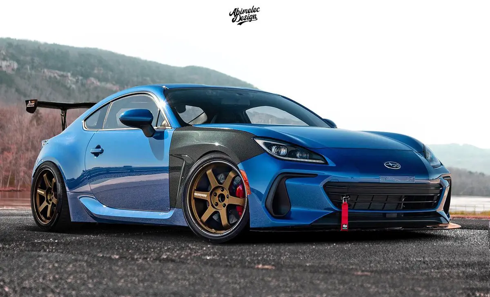
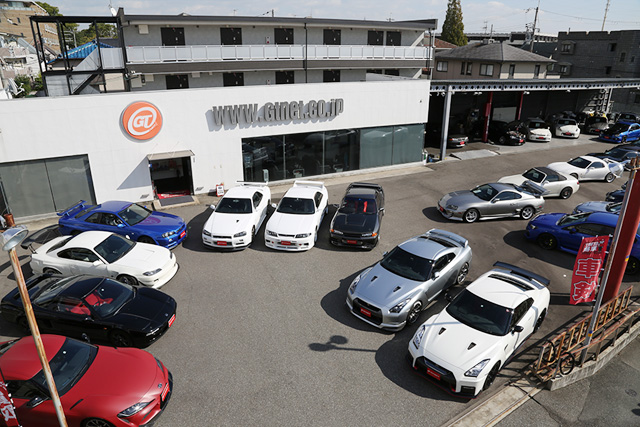
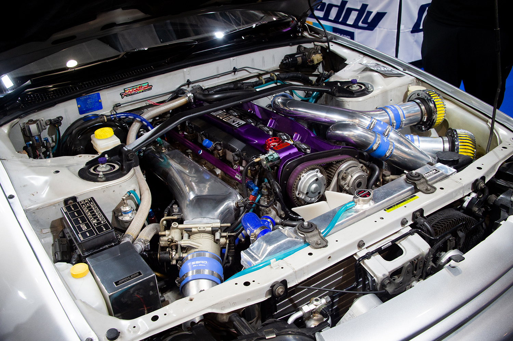
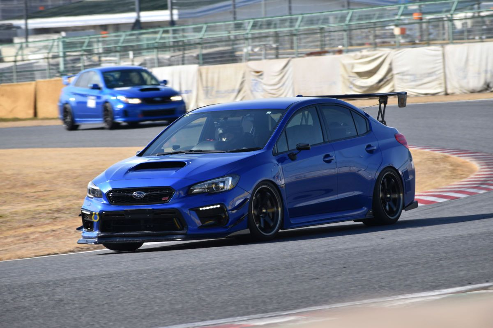

シンプルにかっこいい
男ならかっこいいものが好きなもんです。 これだけでも十分所有したい欲が生まれますよね。
若者は、スポーツカーに乗れるのか。
購入から維持、車の基礎知識まで、
リアルにわかりやすく。
初めまして。今回は、大学生や高校生（若者）が、 一般的に維持費が大変だと言われるスポーツカーを 所有することはできるのか。 また、維持することはできるのか問題について 解説していこうかと思います。
車の知識が皆無な方にもわかりやすく解説しますので、 最後までご覧いただけますと幸いです。 最後では、車についての基礎的な部分の解説もしております。
こういった声はよくありますよね。 それではまず、スポーツカーのメリット・デメリットについて 知ってもらいましょう！

男ならかっこいいものが好きなもんです。 これだけでも十分所有したい欲が生まれますよね。
全てのスポーツカーが速いとは言いませんが、 一般車と比べると速いものが多いです。 ここでいう「速い」とは、最高速度のことではなく、 加速のことです。 加速が速いと高速道路等でスムーズな合流が行えますので、 かなり魅力的ですよね！
「速い」というメリットがありますが、 これは「楽しい」というメリットにも関係があります。 一般車には味わえない感覚があるので、 楽しいと感じるのは当たり前のことなのです。 直線で加速したり、カーブを走っているだけでも、 その楽しさは実感できます。
男はかっこいいものが好きな生き物なので、 知り合いがスポーツカーに乗っていたら、 「おっ！」 となります。 （実際にかなり良いリアクションをされました）
以上がメリットになります。 他にもメリットは山ほどありますが、 これ以上挙げるとかなり長くなってしまうので省略します。
一般車と比べて維持費は高いです。 税金自体は同等ですが、 「保険代」 「燃料代（ガソリン代）」 「消耗品／メンテナンス代」 で大きな差が出ます。 詳しくは後ほど解説いたします。
基本的に街乗りをメインとして開発されているわけではないので、 車高が低く擦りやすい場合があります。 また、小回りが効かない車種も一定数存在しています。 さらに、静粛性の低さや、室内の空間が狭いことにより、 快適性が減少します。
車メーカーにも、「ブランド」というのが存在します。 例えば、知名度の高い日本車である、 トヨタのレクサス。 一般的には高級車というイメージで知られていますよね。 このような価値のある車には盗難がつきものなんです。 スポーツカーにも、価値がある車種というのがいくつも存在します。
以上がメリット・デメリットでした。 これを知るとデメリットの方は大きいと感じる方も 少なくないと思います。 ですが、彼らのメリットには、 これらを打ち消すことができるんです。

必ず出てきます。 そう、予算問題です。 正直に言います。 あなたが「若くて、失うものが何もない」のなら、 多少無理をしてでも本当に欲しい車を購入すべきです。
ただし、 「どうしてもこれに乗りたいんだ！」 という場合に限りです。 「別に、かっこいい見た目ならなんでもいいかな」 って人は、予算内で探しましょう。 絶対にあります。
前提として。 現在新車でスポーツカーを生産している企業は少ないです。 基本的に中古は安いので中古をおすすめします。 （86、BRZ等は普通に安い）
ただし、現在でもなお人気があり、 かつ生産終了している車種は、 年式・走行距離・外装状態・内装状態を評価した上で 値段をみると、普通に高いです。 平均値段は高いが、 平均よりも極端に安いものには注意が必要です。
「ガソリン代」 「任意保険代」 「タイヤ代」 「オイル代」 「自動車税」 の項目に絞って説明します。
| 項目 | 今回の基準・考え方 |
|---|---|
| ガソリン代 | 毎日使用・通学通勤のみで月約4.5万円 |
| 任意保険 | 実体験では年間約20万円 |
| タイヤ | 溝・ひび割れ、冬タイヤ、交換工賃まで考える |
| オイル | 3,000〜5,000kmを目安に交換 |
| 自動車税 | 排気量に応じて確認 |
私は普段使いしているので、 普段使い想定でお話しします。 私は毎日使用しているので、 月々のガソリン代は単純計算で約4.5万円。 休日などのドライブは含んでおりません。 家から学校、バイト先までの通学・通勤のみでの 使用での金額となります。
私の車の燃費は、 平均約4〜5km/Lです。 以上を基準に考えていただければ、 想像しやすいかと思います。 自身が欲しいと思う車種の燃費も調べてみてください。
任意とは言ってますが、 私は絶対に入った方がいいと考えています。 ちなみに私は年間で20万程でした。 任意保険は複雑で長くなってしまうので、 詳しくは別サイトをご覧ください。 なんとなくで知りたい方は私のを参考にどうぞ。
中古車で溝が減ってきていたり、 ヒビが入っていたりした場合には、 タイヤ交換が必須になります。 さらに。 雪国にお住まいの方は、 スタッドレスタイヤ（冬タイヤ）を装着する義務があるので、 購入が必須になります。 それに伴い、タイヤ交換代も含まれます。 タイヤ交換をする機会が多い方は、 ご自身で交換できるようになるのが、 最も賢い選択肢です。
3000km〜5000kmの走行で、 オイルを交換するのが良いとされています。 オイルの量にもよりますが、 大体1万円くらいでしょう。 工賃はそれほど高くはありません。
こちらは排気量に依存しています。 なので、ご自身が欲しいと思う車種の 自動車税を調べるのが一番手っ取り早いです。
毎月の返済をなくし、 購入後の維持費に余裕を持たせる。
月々の支払いを把握した上で、 維持費と合わせて考える。
購入費・保険・駐車場など、 協力できる部分を相談する。
車両価格を抑え、 状態と整備履歴をしっかり確認する。
価格だけで判断せず、 名義変更・整備状態・保証の有無まで確認する。
大まかには、こんな感じだと思います。 ぶっちゃけ、購入することはできるのが大半ですが、 その後の維持を考えて購入に至らない場合が多いです。 なので、どうしたら購入できるのかよりも、 どうしたら維持ができるのかを考えた方が、 より成功に近づくかもしれません。
大半の人は毎日車を使うことはないと思うので、 10万円／月もあれば、 少量の金額でも貯金に回すほどの余裕はあるでしょう。 10万円／月の一人暮らしで、 家賃や光熱費も自身で支払いしている場合、 燃費良く走ることを意識したり、 使用頻度を少なくしたり などの工夫が必要になるでしょう。 あまり現実的ではないのかもしれません。
ただし、 「買えるか」と「維持できるか」は別問題です。
車両価格だけを見て決めるのではなく、 ガソリン・保険・タイヤ・オイル・税金、 そして突然の故障や修理まで含めて、 自分の生活に無理なく組み込めるかを考えることが大切です。
そして、最も大切なのは 「本当に欲しい車なのか」。 予算だけで妥協して後悔するくらいなら、 少し時間をかけて貯金し、 欲しい車を狙うという選択肢もあります。
逆に、見た目やブランドだけで選ぶのではなく、 維持費・使い方・駐車環境・故障リスク まで考えれば、 学生でも現実的に楽しめるスポーツカーは しっかり存在します。
スポーツカーは「金持ちだけの趣味」ではありません。
必要なのは、
正しい知識と計画、
そして何より
「この車に乗りたい」という気持ちです。

馬力は最高速度だと考えてよい
トルクは加速度だと考えてよい
正式名称は 「ターボチャージャー」。 排気ガスの力を利用してエンジンに空気を強引にたくさん送り込み、 パワーを爆発的に増やす仕組み。
排気量が小さくても力強い。 例：1.5Lのターボ車で、 2.0L〜2.5Lクラスの車と同じくらいの パワフルな加速が味わえます。 坂道や合流も楽。 低い回転数から力が出るため、 高速道路の合流や急な坂道でも アクセルを強く踏み込まずスムーズに加速できます。
燃費が悪くなりやすい。 空気を多く入れる分ガソリンも多く使うため、 アクセルを踏み込むと燃費が落ちやすいです。 メンテナンスに気を使う （オイル管理が重要）。 ターボラグがある （車種による）。
NAとは、 「自然吸気 （Naturally Aspirated / Normal Aspiration）」 の略で、 ターボなどの過給機 （空気を押し込む装置） を使わず、 エンジンの力だけで自然に空気を吸い込んで走るタイプ。
アクセル操作に対する反応 （レスポンス）が素直。 アクセルを踏んだ分だけ素直に加速します。 高回転までスムーズに回る気持ちよさ。 メンテナンスが比較的楽で壊れにくい。
パワーを出すには 「大きな排気量」が必要。 低回転での力強さはターボに劣る。 坂道や高速道路の合流などでは、 アクセルを少ししっかり踏み込む必要があります。
MT（マニュアル・トランスミッション）と AT（オートマチック・トランスミッション）は、 車の変速（ギアチェンジ）を 自分で行うか、 車が自動で行うかの違いです。
クラッチペダルを踏み、 シフトレバーを使って 自分の手足でギアを切り替える方式です。
アクセルとブレーキの操作だけで、 車が速度に合わせて 自動で適切なギアを選んでくれる方式です。
FF・FR・4WDは、 車の「エンジンの位置」と 「どのタイヤが駆動するか （力を伝えるか）」 を表す駆動方式の分類です。 走行性能やハンドリング、 雪道での強さなどに大きく影響します。
エンジンが車の前にあり、 前輪だけを動かして走る方式。 前輪が「車を引っ張る」イメージ。
室内空間を広く確保しやすい。 直進安定性が高い。 車体を軽くしやすく燃費が良い。
前輪に駆動と舵取りの両方の負荷がかかるため、 限界走行時にアンダーステア傾向。
代表的なスポーツモデル： シビック Type R、 スイフトスポーツ
エンジンが車の前にあり、 後輪だけを動かして走る方式。 前輪で方向を変え、 後輪で「後ろから車を押す」イメージ。
舵取りと駆動の役割が分かれ、 ハンドリングが素直。 加速時の接地感が得られる。
プロペラシャフトが必要。 雨や雪では後輪が滑りやすい。
代表的なスポーツモデル： トヨタ 86 / BRZ、 マツダ ロードスター、 フェアレディZ
エンジンからのパワーを 4本のタイヤすべてに伝えて走る方式。
高いトラクションとグリップ。 濡れた路面や雪道、 悪路での走破性が高い。 ハイパワー車の加速にも強い。
駆動系の部品が多く、 車体重量や燃費、 メンテナンス費用が増えやすい。
代表的なスポーツモデル： WRX STI、 GRヤリス、 GT-R（R35）
➔ FR （自分で車をコントロールしている 感覚が最も強い）
➔ 4WD （雪国に住んでいる人や ハイパワー車向け）
➔ FF （実用性と走りのバランスが良い）
スポーツカーと一言で言っても、 維持費や特徴は車種によって様々です。 ここでは、 「若者・学生が初めて乗るのにおすすめのスポーツカー」 をタイプ別に紹介します！
代表車種： マツダ・コペン、 ホンダ・S660、 スズキ・アルトワークス
駆動方式： FF / MR
軽自動車なので自動車税は年間10,800円と格安。 タイヤ代や保険料も普通車より安いため、 「まずは維持費のプレッシャーなしで スポーツカーを楽しみたい」 という方に最適です。
代表車種： マツダ・ロードスター、 トヨタ・86 / スバル・BRZ
駆動方式： FR
「本格的なFRスポーツカーに乗りたい」 という方におすすめのジャンルです。 NAのシンプルさ、 燃費、 豊富なパーツなどから 中古車本体も維持費も 現実的な範囲に収まりやすいです。
代表車種： スズキ・スイフトスポーツ、 ホンダ・フィット RS
駆動方式： FF
5人乗りで荷物もしっかり積めるため、 日常使いや友人とのドライブでも活躍します。 特にスイフトスポーツ（ZC33S）は 1.4Lターボと軽い車重が魅力です。
とにかくお金をかけたくない！ ➔ 軽スポーツ（コペン・S660）
FRで「車を操る楽しさ」を味わいたい！ ➔ ロードスター / 86・BRZ
友達も乗せたい・実用性も欲しい！ ➔ スイフトスポーツ
自分の予算や普段の生活スタイル （通学メインなのか、 休日のドライブメインなのか） に合わせて、 最高のパートナーとなる1台を 見つけてみてください！

維持費や購入時のハードルを乗り越えた先には、 一般車では絶対に味わえない最高の世界が待っています。 スポーツカーは単なる「移動手段」ではなく、 人生を豊かにしてくれる最高の趣味でありパートナーです。
足元を変えるだけで 車の印象がガラリと変わります。 デザインだけでなく、 軽量化による走行性能アップも魅力。
エンジンをかけた瞬間のサウンド、 加速するときの心地よい排気音は スポーツカーの醍醐味です。
車高を下げることで スタイリッシュな見た目を手に入れつつ、 カーブでの傾きを抑えて 走りをシャープにできます。
フロントスポイラーやリアウイングなど、 空力性能を高めると同時に レーシーで圧倒的にかっこいい外観に仕上がります。
自分の手でピカピカに磨き上げた愛車を 眺める時間は至福のひとときです。
簡単なパーツ交換やオイル管理などを 自分でチャレンジすることで、 構造への理解が深まり、 車への愛着がさらに湧きます。
ただ目的もなく走らせるだけで楽しいのがスポーツカー。 景色の良い峠道や海沿いを走り、 気に入ったスポットで 愛車の写真を撮る楽しさは格別です。
SNSやイベントを通じて 同じ車種・車好きな仲間と繋がり、 情報交換やツーリングを楽しめます。
日常では味わえない限界走行や 真の走行性能を安全なコースで体験し、 運転技術を磨くことができます。
ここで紹介しているのは
「金がかかる」項目ではありません。
スポーツカーの魅力を魅せるための項目です。
「若者の車離れ」と言われて久しい現代ですが、 「本当はかっこいい車に乗りたい」 「スポーツカーに憧れている」 という若者はたくさんいます。 しかし、ネット上には 「学生に維持は無理」 「若者が買うのは無謀」 といったネガティブな意見があふれており、 一歩を踏み出せない人が多いのが現実です。
だからこそ、 「正しい知識と準備があれば、 若者や学生でもスポーツカーに乗れる！」 というリアルな情報を届けるために このサイトを立ち上げました。
私自身も、皆さんと同じように 知識ゼロの状態から スポーツカーへの憧れを抱き、 悩み、工夫しながら 所有に至った一人の車好き（学生）です。 実体験に基づいた 「リアルなお金の話」や 「買ってから分かったこと」 を発信しています。
移動するだけなら、 今の車はどれも優秀です。 しかし、 アクセルを踏んだときの加速感、 ハンドルを切ったときの素直な反応、 ガレージで眺めているときの所有感など、 心から感動させてくれる魅力が スポーツカーにはあるからです。 若いうちにこの感動を体験することは、 間違いなく人生の貴重な財産になります。
当サイトでは、ただ夢を語るだけでなく、 「現実的な維持費用」 や 「所有するデメリット」 も含めた一次情報 （リアルな体験） を隠さず包み隠さずお伝えします。 「買ってみたら維持できなかった」 という後悔をなくし、 一人でも多くの若者が安心して 最高のスポーツカーライフを スタートできるようサポートしていきます。